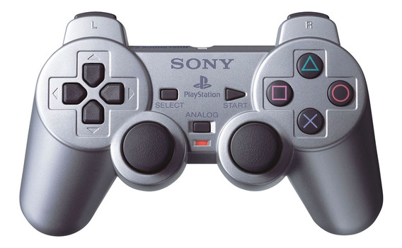
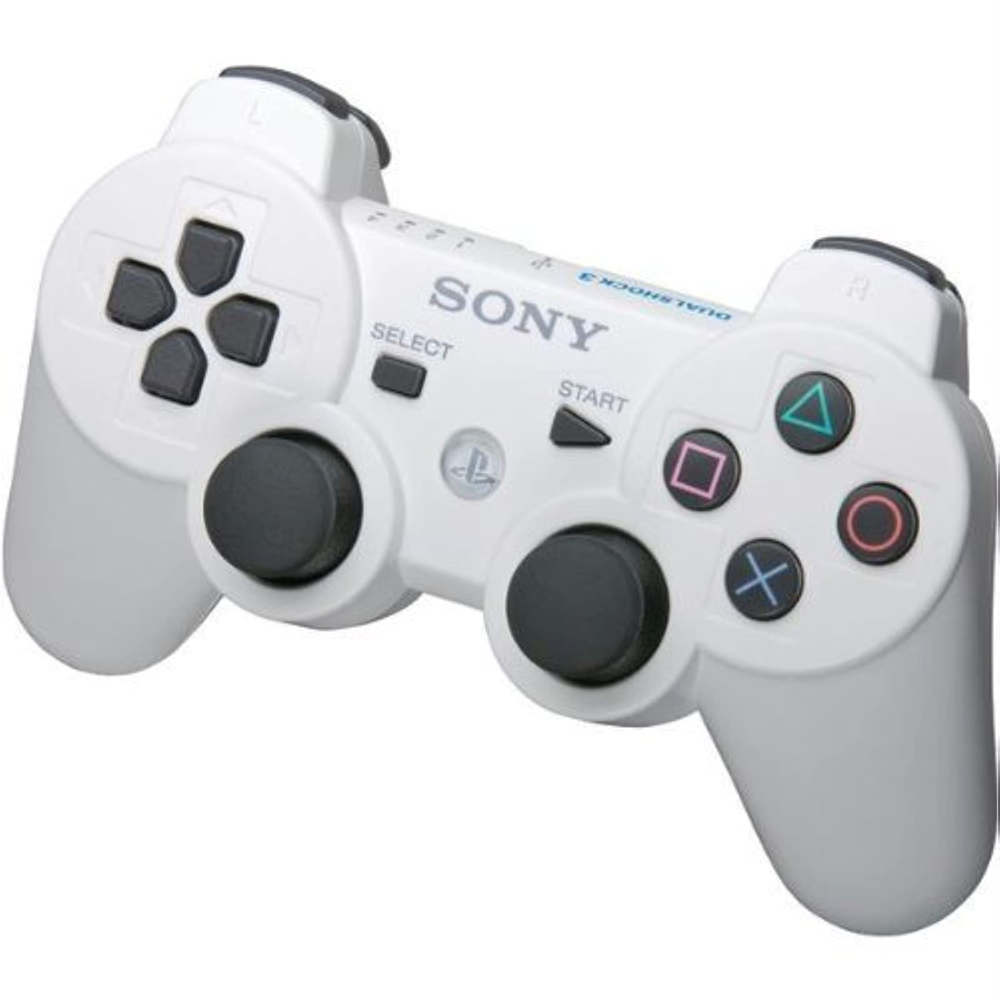
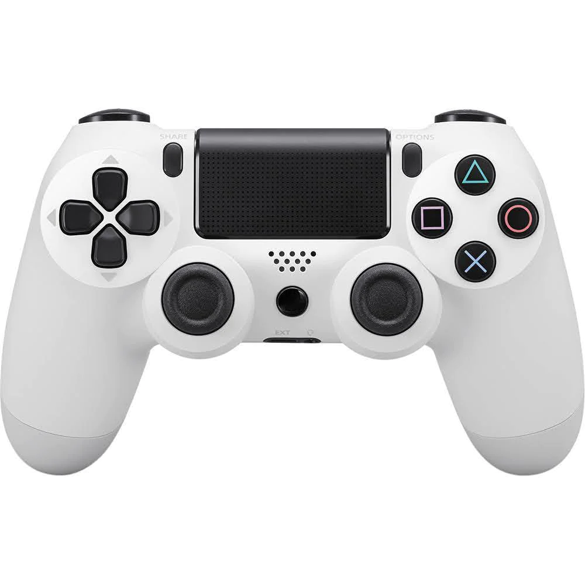
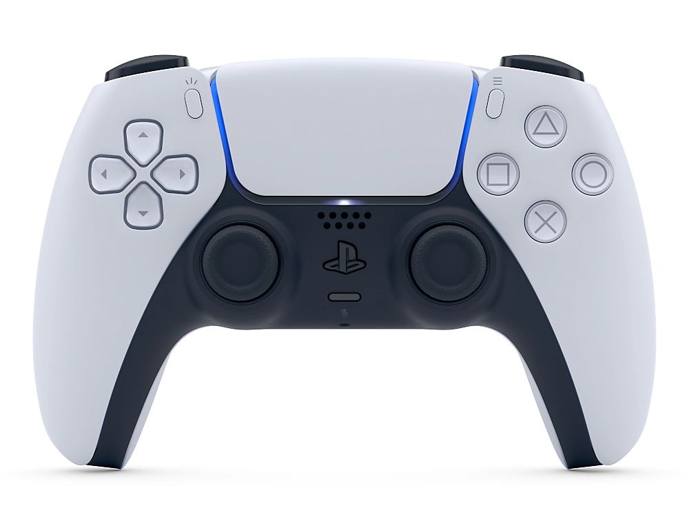
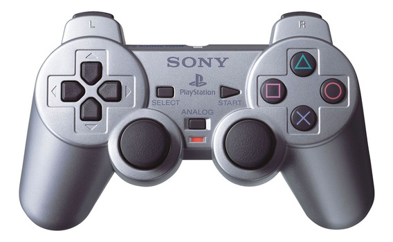
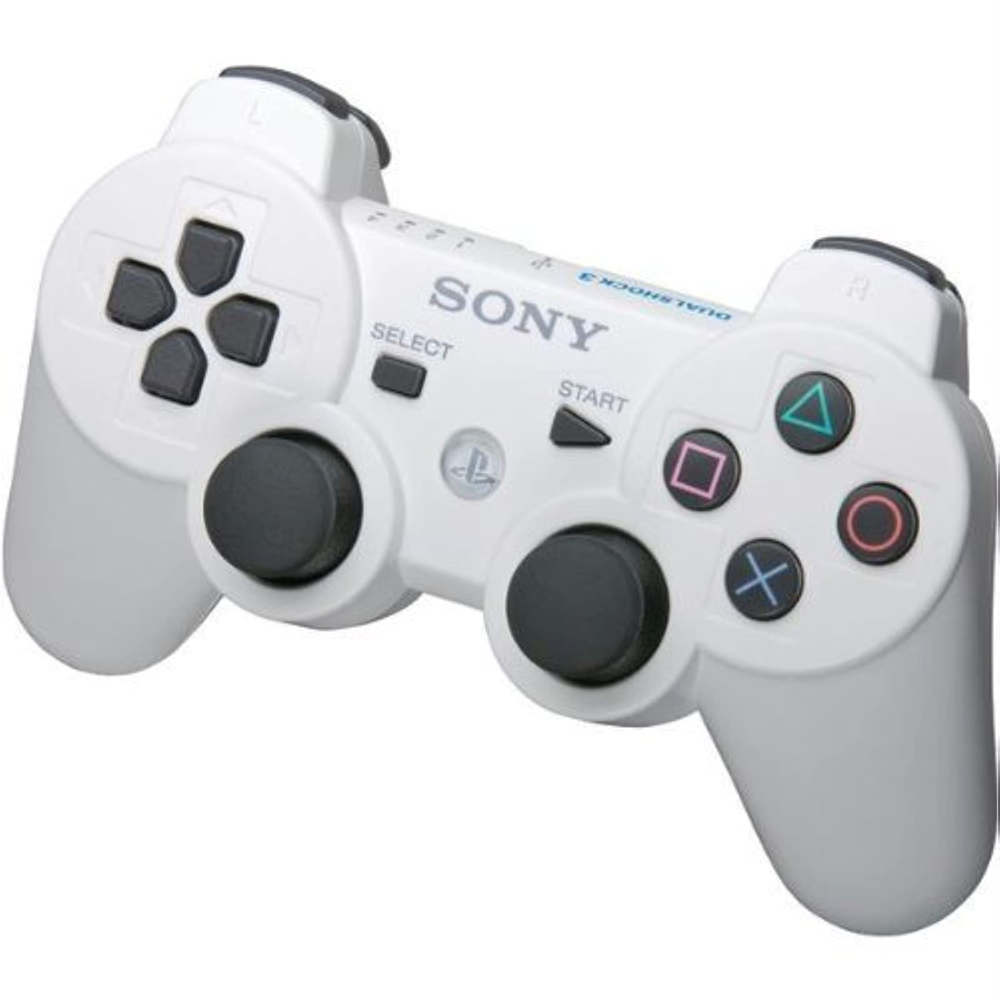
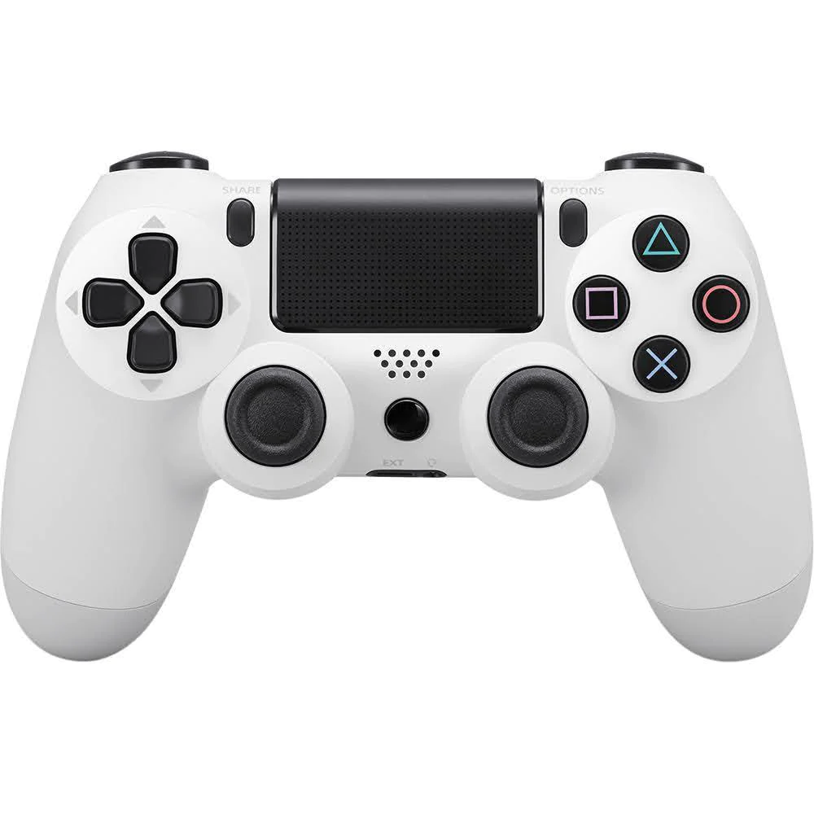
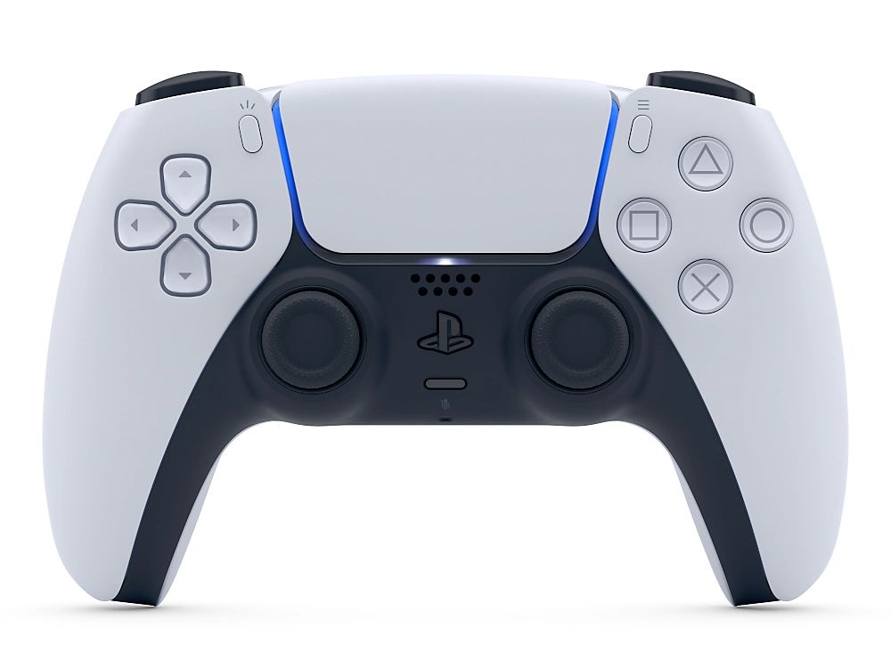
Para hablar del origen de la PlayStation hay que remontarse a los orígenes de Sony, que revolucionó
el mercado con los famosos Walkman y que más tarde dio el salto al audio digital sustituyendo los cassetes por los discos compactos (conocidos como CDs).
A raíz de este cambio llegó la primera toma de contacto de la compañía con los videojuegos, al llegar a un acuerdo con Nintendo para intentar incorporar un lector de discos al tradicional formato de los cartuchos,
acuerdo que duró muy poco debido al escaso margen de beneficios que esto tenía para Sony.
Fue más tarde cuando Ken Kutaragi, ingeniero informático de la compañía y gran aficionado a los videojuegos, presentó la primera idea para crear una consola que incorporase el formato CD-ROM. Aunque dicha idea al principio fue descartada, al final consiguió salir adelante.
El proyecto fue avanzando hasta derivar en la creación, en 1993, de Sony Computer Entertainment, la rama de la compañía que se dedicaría en exclusiva al desarrollo de consolas y videojuegos.
Y esto hizo que, finalmente, el 3 de diciembre de 1994 saliera a la venta la PS One, la primera PlayStation de la historia.
Su lanzamiento fue un auténtico éxito contra todo pronóstico, vendiendo más de 100.000 unidades en su primer día en Japón (primero fue lanzada en este país de forma exclusiva).
En total se han vendido aproximadamente 105 millones de unidades a nivel mundial.
Seis años más tarde, el 4 de marzo del 2000, llegó la PlayStation 2, que revolucionó el mercado y rompió todos los números de su antecesora, llegando a vender más de 160 millones de unidades en todo el mundo y convirtiéndose así en la consola más vendida de la historia, récord que sigue manteniendo vigente a día de hoy.
Esta consola supuso una gran innovación en el desarrollo de videojuegos, ampliando así su catálogo a más de 2.700, entre los que destacan títulos como God Of War, Resident Evil, Grand Theft Auto o Kingdom Hearts.
PlayStation también revolucionó la industria del videojuego con los mandos de sus consolas.
El hecho de incorporar los dos cuernos de agarre en el diseño rompió con el estigma que había hasta el momento y proporcionó a los jugadores una mayor comodidad en la sujeción y un mejor acceso a los botones.
Los sticks analógicos y la función de vibración también fueron otras dos importantes innovaciones.
A partir de ahí, PlayStation ha ido manteniendo la misma estructura limitándose tan solo a añadir nuevas mejoras y funciones al diseño del mando original.
Así es como han evolucionado los mandos desde la PS One a la PS5.
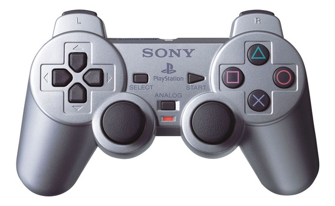
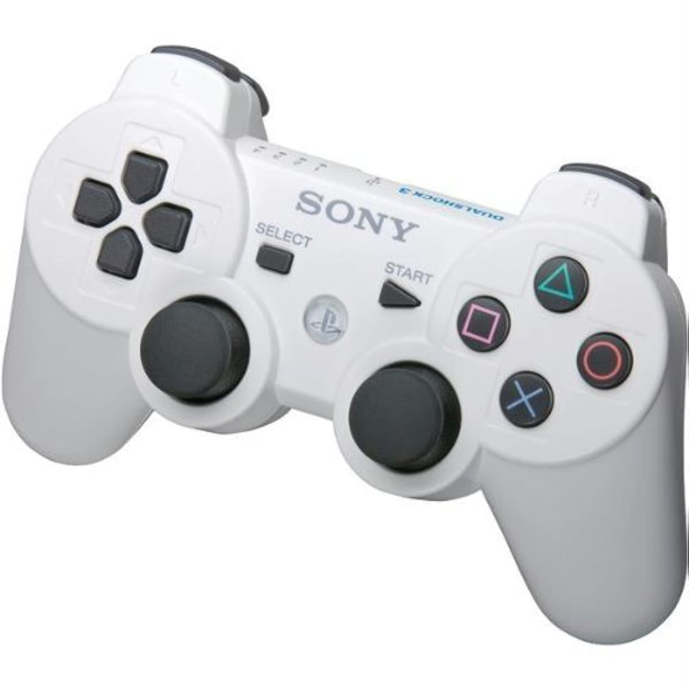
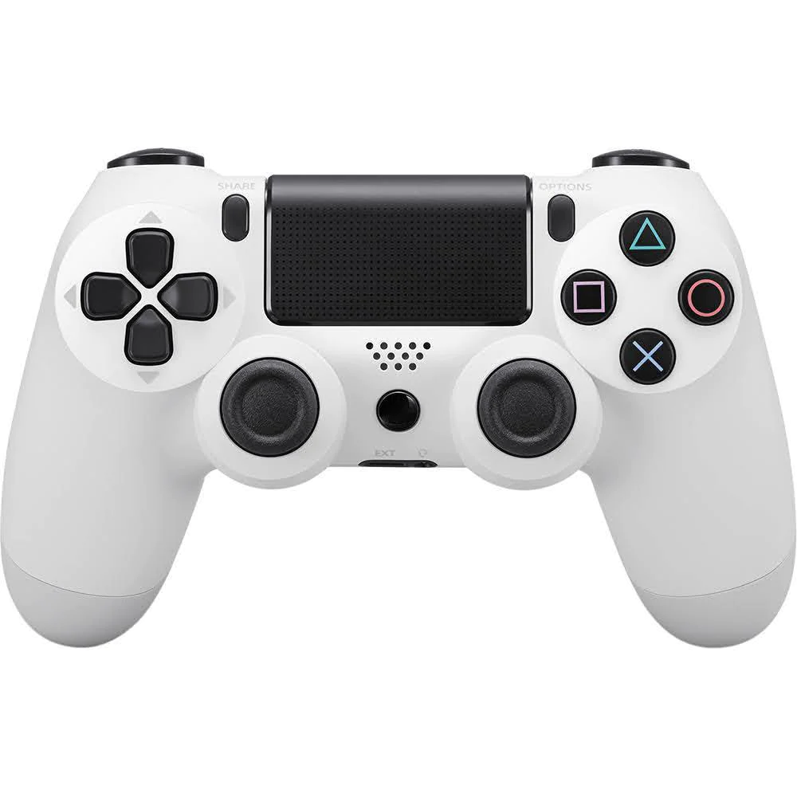
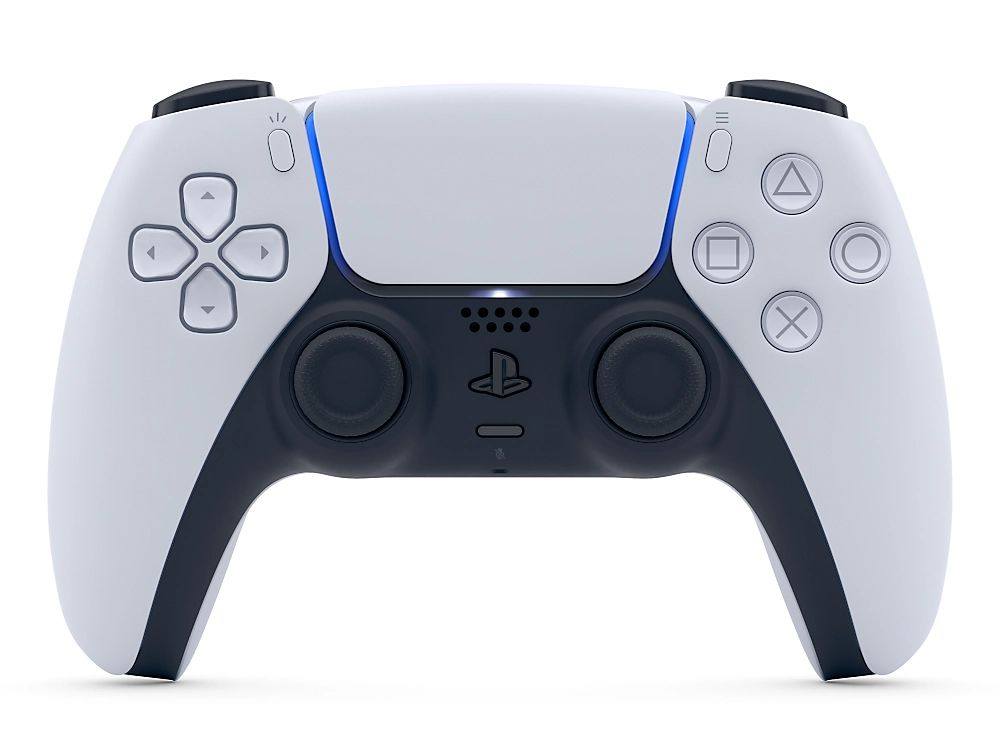